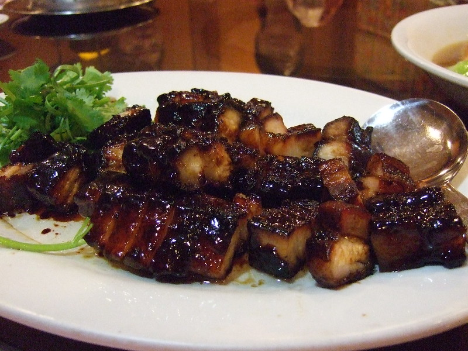

Home
Char Siu (叉烧)

Photo shot by Yun Huang Yong
Description :
Char Siu (叉烧), also knows as Chinese BBQ pork, is a type of roasted pork originating from Cantonese cuisine. Traditionally, the marinated pork is skewered with long forks and roasted in an oven or over an open fire. That’s where its Chinese name Char/叉 (fork) Siu/烧 (roast) comes from.
Ingredients :
- Pork shoulder
- Char Siu sauce
- Oyster sauce
- Light soy sauce
- Chinese five-spice powder
- Garlic
- Ginger
- Chilli powder
Steps :
- Mix all the ingredients for the marinade.
- Marinate the pork overnight in the fridge.
- Roast the meat on a wire rack in the oven. Take out about halfway to flip over and brush more marinade.
- Towards the end, brush the honey mixture then roast under higher temperature for a short while to produce a nice glaze.